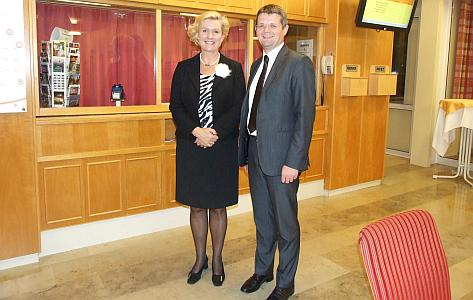

do aktualności
do aktualności2013-10-12
I znowu „zrywka” o świcie, śniadanie i wyjazd. Zwiedzamy dalej Wiedeń, ale dzisiaj już pogoda zamówiona, więc piękna.
Oglądamy najpiękniejsze miejsca Wiednia.
O!!! nasza pani dyrygentka . . . chyba „wpadł” jej w oko? A czy ona jemu???
Teraz wykonujemy „mruczando, mormorando” - Strauss Johann „Nad pięknym i modrym Dunajem” no cóż ? w końcu jesteśmy super chórem.
Koniec zwiedzania. Wsiadamy i jedziemy na obiad i koncert.
Po obiedzie chwila relaksu na ławeczce.
No i do pracy, frakonosze z autokaru zabieramy i maszerujemy na próbę.
Dzisiaj śpiewamy na inauguracji II roku akademickiego Polskiego Uniwersytetu Trzeciego Wieku w Austrii.
Sala pełna jest ponad 200 osób.
Właśnie nasz chór pod dyr. Izabeli Szoty uświetni koncertem uroczystość rozpoczęcia nowego roku akademickiego, zaczynając od hymnu „Gaudeamus Igitur”.
A potem już poooszło.
Koniec. Ukłony, kwiaty, podziękowania, owacje na stojąco.
Teraz spotkanie przy lampce wina.
I jeszcze zdjęcie pamiątkowe ze spotkania.

Wracamy do hotelu.
W czasie drogi krótkie podsumowanie koncertu i choć mina wygląda na groźną było super.
do aktualności


 Prowadzenie strony: Małgorzata Wysocka-Cebula
Prowadzenie strony: Małgorzata Wysocka-Cebula